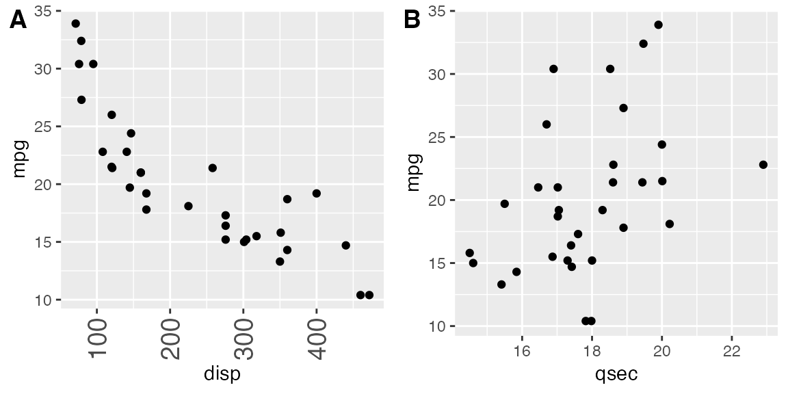
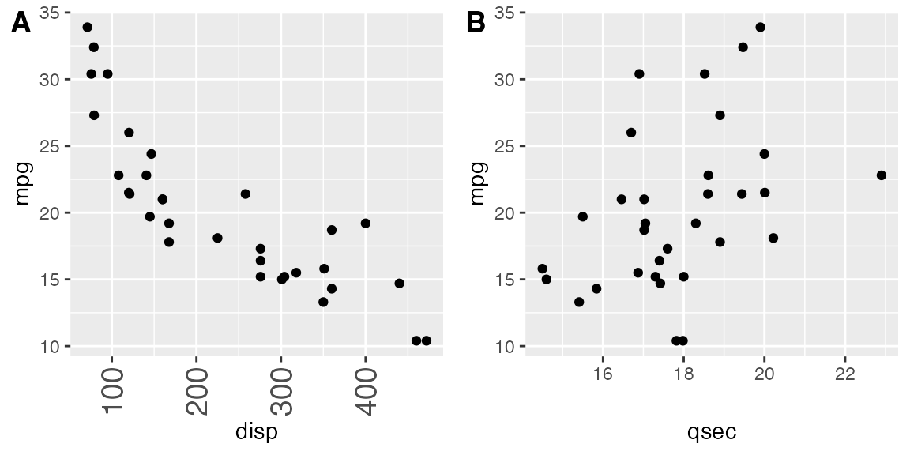
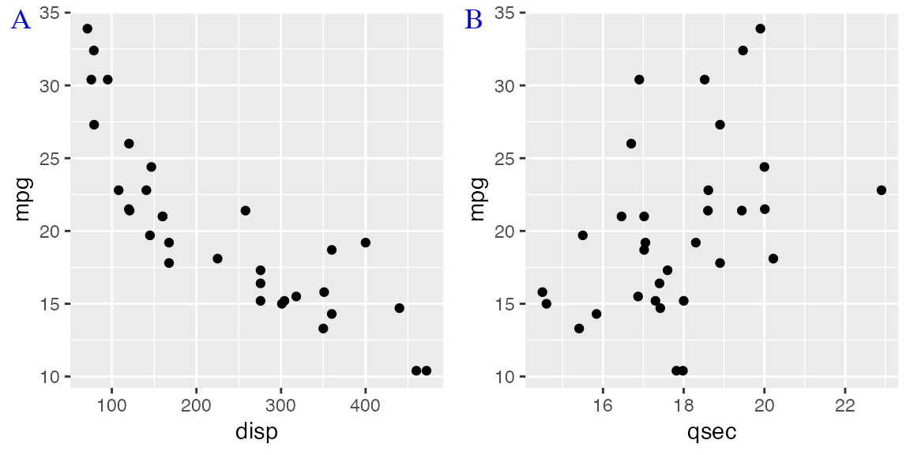
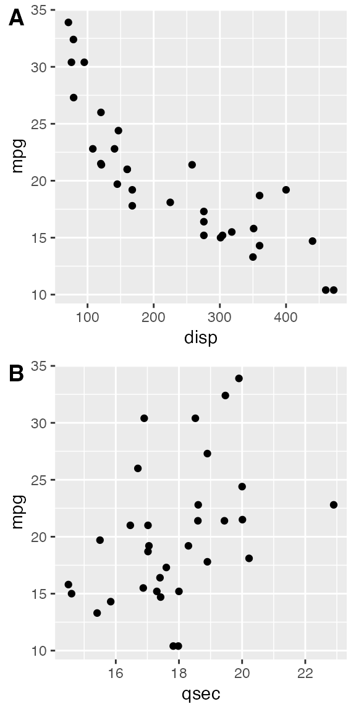

This vignette covers the function plot_grid(), which can be used to create table-like layouts of plots. This functionality is built on top of the cowplot drawing layer implemented in ggdraw() and draw_*(), and it aligns plots via the align_plots() function. It is strongly recommended to read the vignettes on these two sets of features (the vignettes called “Drawing with and on plots” and “Aligning plots”) to fully understand how plot_grid() works.
Basic usage
The plot_grid() function provides a simple interface for arranging plots into a grid and adding labels to them.
library(ggplot2) library(cowplot) p1 <- ggplot(mtcars, aes(disp, mpg)) + geom_point() p2 <- ggplot(mtcars, aes(qsec, mpg)) + geom_point() plot_grid(p1, p2, labels = c('A', 'B'))

If you specify the labels as labels = "AUTO" or labels = "auto" then labels will be auto-generated in upper or lower case, respectively.
plot_grid(p1, p2, labels = "AUTO")

plot_grid(p1, p2, labels = "auto")

By default, the plots are not aligned, but in many cases they can be aligned via the align option.
p3 <- p1 + # use large, rotated axis tick labels to highlight alignment issues theme(axis.text.x = element_text(size = 14, angle = 90, vjust = 0.5)) # plots are drawn without alignment plot_grid(p3, p2, labels = "AUTO")

# plots are drawn with horizontal alignment plot_grid(p3, p2, labels = "AUTO", align = "h")

For more complex plot arrangements or other specific effects, you may have to specify the axis argument in addition to the align argument. See the vignette on aligning plots for details.
The function plot_grid() can handle a variety of different types of plots and graphic objects, not just ggplot2 plots. See the vignette on mixing different plotting frameworks for details. However, alignment of plots is only supported for ggplot2 plots.
Fine-tuning the plot grid
You can adjust the label size via the label_size option. Default is 14, so larger values will make the labels larger and smaller values will make them smaller.
plot_grid(p1, p2, labels = "AUTO", label_size = 12)

You can also adjust the font family, font face, and color of the labels.
plot_grid( p1, p2, labels = "AUTO", label_fontfamily = "serif", label_fontface = "plain", label_colour = "blue" )

Labels can be moved via the label_x and label_y arguments, and justified via the hjust and vjust arguments. For example, to place labels into the bottom left corner, you can write:
plot_grid( p1, p2, labels = "AUTO", label_size = 12, label_x = 0, label_y = 0, hjust = -0.5, vjust = -0.5 )
It is possible to adjust individual labels one by one by passing vectors of adjustment values to the options label_x, label_y, hjust, and vjust (example not shown).
The numbers of rows and columns in the plot grid can be specified via nrow and ncol.
# arrange two plots into one column plot_grid( p1, p2, labels = "AUTO", ncol = 1 )

The argument NULL can be used to indicate a missing plot in the grid. Note that missing plots will be labeled if automatic labeling is turned on.
# the second plot in the first row and the # first plot in the second row are missing plot_grid( p1, NULL, NULL, p2, labels = "AUTO", ncol = 2 )

The relative widths and heights of rows and columns can be adjusted with the rel_widths and rel_heights arguments.

Nested plot grids
If you want to generate a plot arrangement that is not a simple grid, you may insert one plot_grid() plot into another.
bottom_row <- plot_grid(p1, p2, labels = c('B', 'C'), label_size = 12) p3 <- ggplot(mtcars, aes(x = qsec, y = disp)) + geom_point() + facet_wrap(~gear) plot_grid(p3, bottom_row, labels = c('A', ''), label_size = 12, ncol = 1)
Alignment can be a bit tricky in this case. However, it can usually be achieved through an explicit call to align_plots(). The trick is to first align the top-row plot (p3) and the first bottom-row plot (p1) vertically along the left axis, using the align_plots() function. These aligned plots can then be passed to plot_grid().
# first align the top-row plot (p3) with the left-most plot of the # bottom row (p1) plots <- align_plots(p3, p1, align = 'v', axis = 'l') # then build the bottom row bottom_row <- plot_grid(plots[[2]], p2, labels = c('B', 'C'), label_size = 12) # then combine with the top row for final plot plot_grid(plots[[1]], bottom_row, labels = c('A', ''), label_size = 12, ncol = 1)

Joint plot titles
When we combine plots with plot_grid(), we may want to add a title that spans the entire combined figure. While there is no specific function in cowplot to achieve this effect, it can be simulated easily with a few lines of code:
# make a plot grid consisting of two panels p1 <- ggplot(mtcars, aes(x = disp, y = mpg)) + geom_point(colour = "blue") + theme_half_open(12) + background_grid(minor = 'none') p2 <- ggplot(mtcars, aes(x = hp, y = mpg)) + geom_point(colour = "green") + theme_half_open(12) + background_grid(minor = 'none') plot_row <- plot_grid(p1, p2) # now add the title title <- ggdraw() + draw_label( "Miles per gallon decline with displacement and horsepower", fontface = 'bold', x = 0, hjust = 0 ) + theme( # add margin on the left of the drawing canvas, # so title is aligned with left edge of first plot plot.margin = margin(0, 0, 0, 7) ) plot_grid( title, plot_row, ncol = 1, # rel_heights values control vertical title margins rel_heights = c(0.1, 1) )

In the final plot_grid line, the values of rel_heights need to be chosen appropriately so that the margins around the title look correct. With the values chosen here, the title takes up 9% (i.e., 0.1/1.1) of the total plot height.